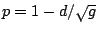
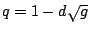

Generalizing the one-zero, one-pole filter above, suppose we place the
zero at a point  , a real number close to, but less than, one. The
pole, at the point
, a real number close to, but less than, one. The
pole, at the point  , is similarly situated, and might be either
greater than or less than
, is similarly situated, and might be either
greater than or less than  , i.e., to the right or left, respectively,
but with both
, i.e., to the right or left, respectively,
but with both  and
and  within the unit circle. This situation is
diagrammed in Figure 8.14.
within the unit circle. This situation is
diagrammed in Figure 8.14.
At points of the circle far from  and
and  , the effects of the pole and the
zero are nearly inverse (the distances to them are nearly equal), so the filter
passes those frequencies nearly unaltered. In the neighborhood of
, the effects of the pole and the
zero are nearly inverse (the distances to them are nearly equal), so the filter
passes those frequencies nearly unaltered. In the neighborhood of  and
and
 , on the other hand, the filter will have a gain greater or less than one
depending on which of
, on the other hand, the filter will have a gain greater or less than one
depending on which of  or
or  is closer to the circle. This configuration
therefore acts as a low-frequency shelving filter. (To make a high-frequency
shelving filter we do the same thing, only placing
is closer to the circle. This configuration
therefore acts as a low-frequency shelving filter. (To make a high-frequency
shelving filter we do the same thing, only placing  and
and  close to -1
instead of 1.)
close to -1
instead of 1.)
To find the parameters of a shelving filter given a desired
transition frequency  (in angular units) and low-frequency
gain
(in angular units) and low-frequency
gain  , first we choose an average distance
, first we choose an average distance  , as pictured in the figure,
from the pole and the zero to the edge of the circle. For small values of
, as pictured in the figure,
from the pole and the zero to the edge of the circle. For small values of  ,
the region of influence is about
,
the region of influence is about  radians, so
simply set to get the desired transition frequency.
radians, so
simply set to get the desired transition frequency.
Then put the pole at
 and the zero at
. The gain at zero frequency is then